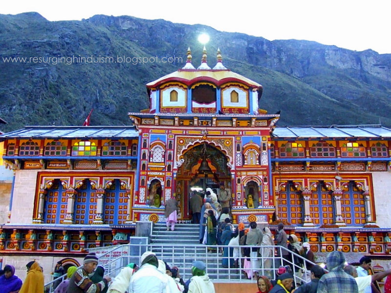
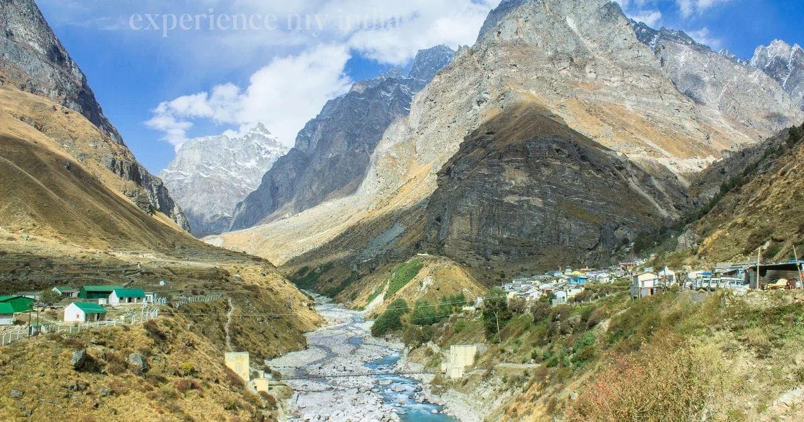

Places to Visit
Discover sacred temples, alpine lakes, and Himalayan villages across Kedarnath and Badrinath.
🕉️ Kedarnath
The sacred trek — 16 km of devotion through the Himalayas.

Kedarnath Temple
The Sacred Jyotirlinga · Altitude: 3,583m
Kedarnath Temple is one of the twelve Jyotirlingas of Lord Shiva and the most important temple in the Char Dham circuit. Built in the 8th century by Adi Shankaracharya, the temple stands at the head of the Mandakini River, surrounded by the majestic Kedarnath Peak (6,940m) and Kedar Dome (6,831m).
The temple is made of massive stone slabs and has withstood centuries of harsh Himalayan weather — including the devastating 2013 floods. The lingam here is in the form of a pyramid-shaped rock, unlike other Jyotirlingas.
Morning Aarti at 4:30 AM is a must-attend — the sound of Vedic chants echoing off the mountains as the first rays of sun hit the temple is an experience that stays with you forever.

Bhairavnath Temple
Guardian of Kedarnath · Altitude: 3,600m
Perched on a small hill just 500 meters behind the main Kedarnath temple, Bhairavnath Temple is dedicated to Bhairav — a fierce manifestation of Lord Shiva, believed to be the guardian of the Kedarnath valley.
The real magic here is the view. From Bhairavnath, you get the most spectacular panoramic view of the Kedarnath peak, the valley below, and the Mandakini river. Sunrise from this spot (5:30-6:30 AM) is arguably the best photo opportunity in the entire yatra.

Vasuki Tal
High-Altitude Glacial Lake · Altitude: 4,150m
Vasuki Tal is a stunning glacial lake located 8 km from Kedarnath Temple, surrounded by snow-capped Himalayan peaks. The lake gets its name from Vasuki, the serpent king associated with Lord Shiva.
This is a serious high-altitude trek — you gain over 500m from Kedarnath. The path is steep, rocky, and in some sections, you'll be walking on snow even in June. It takes 4-5 hours one way from Kedarnath.

Gandhi Sarovar (Chorabari Tal)
Serene Glacial Lake · Altitude: 3,900m
Gandhi Sarovar, also known as Chorabari Tal, is a beautiful glacial lake located just 3 km from Kedarnath Temple. It was renamed Gandhi Sarovar in 1948 when Mahatma Gandhi's ashes were immersed here.
Compared to Vasuki Tal, this is a much more accessible trek — about 1.5-2 hours one way. The path is a gradual climb with some rocky sections.

Triyuginarayan Temple
Shiva-Parvati's Wedding Venue · Altitude: 1,980m
Triyuginarayan Temple is believed to be the exact spot where Lord Shiva and Goddess Parvati were married. The temple has an eternal flame (akhand dhuni) that devotees believe has been burning since the divine wedding.
Located about 25 km from Kedarnath (near Sonprayag), this temple is accessible by road — no trekking required.

Gaurikund
Hot Water Spring & Trek Start Point · Altitude: 1,982m
Gaurikund is both a sacred site and the practical starting point of the Kedarnath trek. The natural hot water spring (Gauri Kund) is believed to have been created by Goddess Parvati's penance. Many pilgrims take a holy dip here before starting the trek.
🛕 Badrinath
Road goes all the way — no trekking needed!

Badrinath Temple
The Sacred Abode of Lord Vishnu · Altitude: 3,300m
Badrinath Temple is one of the Char Dham and the most important Vishnu temple in India. Located on the banks of the Alaknanda River, surrounded by the Nar and Narayan mountain ranges. Unlike Kedarnath, no trekking is required — the road goes all the way to the temple gate.
The temple houses a 1-meter tall black stone idol of Lord Vishnu. The Tapt Kund — a natural hot water spring at the temple entrance — is where pilgrims take a holy dip before darshan.

Mana Village
India's Last Village · Altitude: 3,200m
Mana Village holds the title of India's last village before the Tibet border. Located just 3 km from Badrinath Temple, this charming Himalayan settlement offers stunning mountain views, ancient mythological caves, and a glimpse into the life of the Bhotiya tribe.
Key attractions: Vyas Gufa — the cave where Sage Vyas dictated the Mahabharata to Lord Ganesha. Ganesh Gufa — where Ganesha wrote the epic. Bhima Pul — a natural rock bridge over the Saraswati River.
🏔️ Manali
Road all the way — adventure, snow, and mountain vibes.
Solang Valley
Adventure Hub · Altitude: 2,560m
Solang Valley is Manali's premier adventure destination. Located 14 km from Manali, it offers paragliding (₹2,500-3,500), zorbing, horse riding, and cable car rides. In winter (Dec-Mar), it transforms into a ski resort with snow activities.
Hadimba Devi Temple
Ancient Wooden Temple · Altitude: 2,050m
Built in 1553, this unique wooden temple is dedicated to Goddess Hadimba from the Mahabharata. Surrounded by a cedar forest, the temple's pagoda-style architecture is stunning. A peaceful 20-minute walk from Mall Road.
Rohtang Pass
Gateway to Lahaul & Spiti · Altitude: 3,978m
Rohtang Pass is the gateway to Lahaul and Spiti valleys. At nearly 4,000m, it offers breathtaking views of glaciers, peaks, and the Chandra River. Snow is present even in summer. Permit required — apply online or through your hotel. Open June-October.
Mall Road & Old Manali
Shopping, Cafes & Culture · Altitude: 2,050m
Mall Road is the heart of Manali — woolen clothes, handicrafts, Tibetan items, and local food. Cross the bridge to Old Manali for a laid-back vibe with hippie cafes, bakeries, and guesthouses. Perfect for budget travelers and backpackers.
Ready to Explore Char Dham?
Plan your complete trip — budget, weather, route map, and places to visit. All in one place.
Plan My Trip →